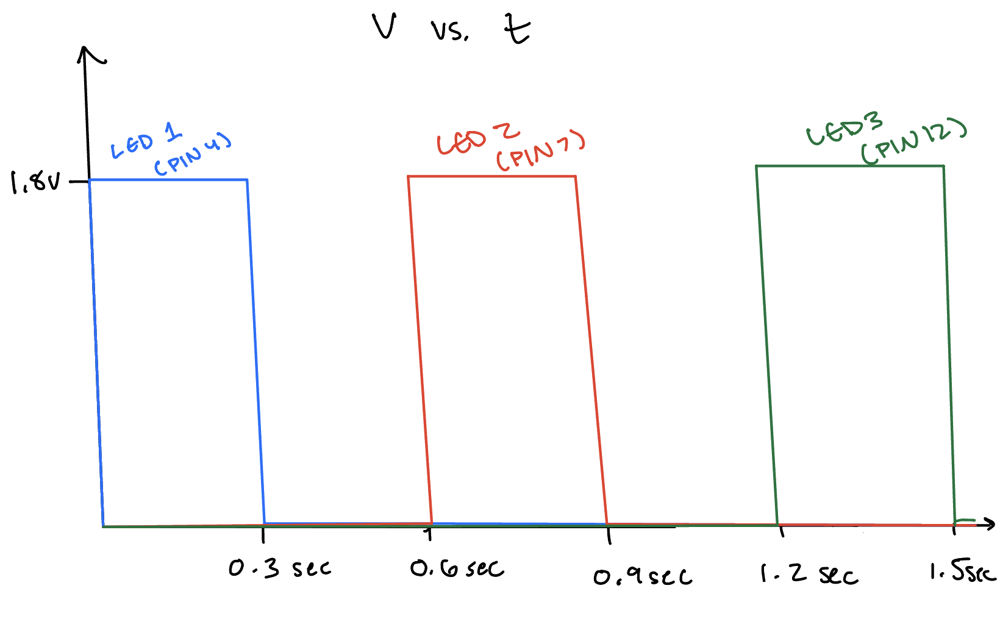

Here is all the documentation for assignment 1!
// the setup function runs once when you press reset or power the board
void setup() {
// initialize digital pin 4 as an output.
pinMode(4, OUTPUT);
// initialize digital pin 7 as an output.
pinMode(7, OUTPUT);
// initialize digital pin 12 as an output.
pinMode(12, OUTPUT);
}
// the loop function runs over and over again forever
void loop() {
// turn the LED (connected to pin 4) on (HIGH is the voltage level)
digitalWrite(4, HIGH);
// wait for 0.3 seconds
delay(300);
// turn the LED off by making the voltage LOW
digitalWrite(4, LOW);
// wait for 0.3 seconds
delay(300);
// turn the LED (connected to pin 7) on (HIGH is the voltage level)
digitalWrite(7, HIGH);
// wait for 0.3 seconds
delay(300);
// turn the LED off by making the voltage LOW
digitalWrite(7, LOW);
// wait for 0.3 seconds
delay(300);
// turn the LED (connected to pin 12) on (HIGH is the voltage level)
digitalWrite(12, HIGH);
// wait for 0.3 seconds
delay(300);
// turn the LED off by making the voltage LOW
digitalWrite(12, LOW);
// wait for 0.3 seconds
delay(300);
}
1. Make a graph of Volts vs. Time for the LEDS
2. It looks like I can blink 13 LEDs independently with the arduino with:
3.2V/220ohms = I = 14.55mA
14.55mA * 13inputs = 0.189A of current
4. I can see blinking down until 10 miliseconds high/low. Anything faster than that is really hard to see.